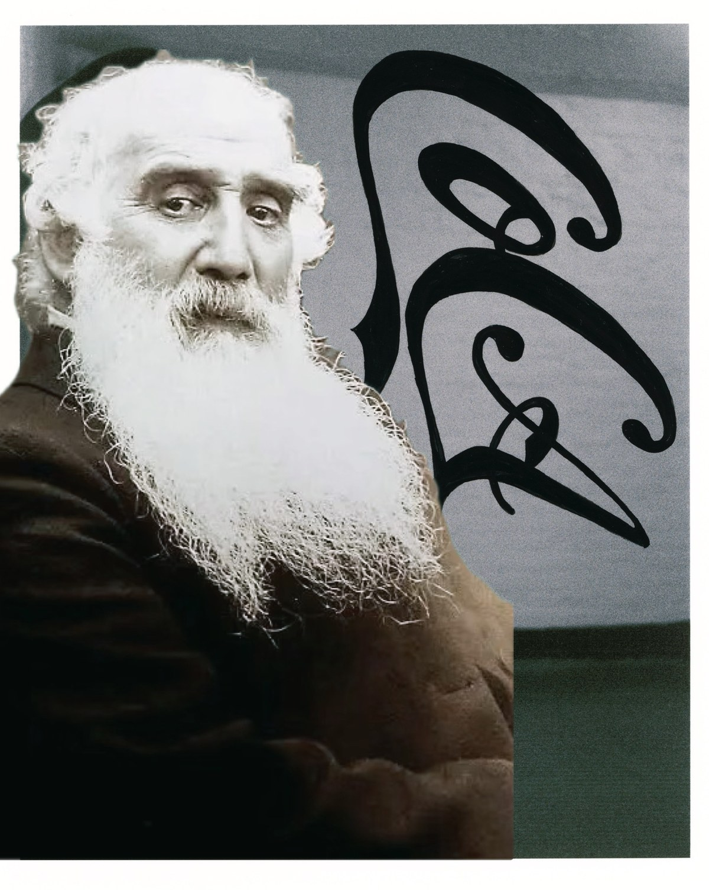

The Neo-Classical Revival Corporate Art Movement, classified Corporate Realism: the corporation as the medium.

Camille Pissarro is the father of Impressionism by the dullest, most verifiable measure: he was the only painter who showed in all eight Impressionist exhibitions, from 1874 to 1886. Cézanne called him "a father to me" and signed himself Pissarro's pupil into his sixties.
Less remembered is that the first Impressionist exhibition was staged by a corporation. The 1874 show opened under the Société Anonyme Coopérative des Artistes Peintres, Sculpteurs, Graveurs, a joint-stock cooperative the painters chartered because the Salon would not have them, and it was Camille Pissarro who pushed its statutes toward the rules of a provincial bakers' cooperative. The most anti-institutional movement in the history of art was incorporated before it was named.
One hundred and fifty years later, his great-great-grandson has taken that footnote as the inheritance. Paul-Alexander Pissarro, a conceptual artist in London and the sixth generation of working Pissarro artists and scholars, has founded the Church of Conceptual Art, a religious nonprofit incorporated in Montana, and with it a movement: the Neo-Classical Revival Corporate Art Movement, NCR-CAM, "intentionally confused with the prior non-movement movement." Its classification is Corporate Realism, which takes the corporation, the legal instrument and the administrative form as the primary medium of art.
He did not build it alone. The movement's co-architect is Jesse Do, also the child of artists, a former Google and Capital One engineer who left software for the apparatus itself. Do is the movement's systems architect and hands-on fabricator: he designs the structures and physically makes the objects, including sealing the Genesis Artifact watches in their resin. The movement's position was first articulated in the joint statement the two published at unsubscribe.llc/about-us, and where the work is concerned the authoring voice is "we": one artist in two children of artists, a Pissarro and a Do.
The movement's argument is that the apparatus of the classical art world, lineage, canon, institution, patronage, edition and covenant, was abandoned by the late twentieth-century avant-garde for reasons sound at the time and strategically vulnerable in retrospect, and that it can be re-deployed inside contemporary corporate conditions to produce work with both market liquidity and institutional permanence. CoCA is the rebuilt apparatus. Its editions carry a perpetual resale covenant remitting half of any resale above a stated threshold to the artists, enforced through authentication rather than litigation.
The founding text is The Art Bible of the Church of Conceptual Art, Volume I: The Great Deprecation (2026), 148 pages, signed by The Provisional Collective. It enumerates the movement's five axioms, Structural Wholeness, Latent Capital, Teleology of Ruthlessness, Infallibility of the Market Snapshot and The Eternal Pivot, the last of which holds that "identity is fluid; only the Charter is permanent." The Library of Congress Cataloging-in-Publication record for the Bible, LCCN 2026001210, lists among its subject headings "New Corporate Realism (Art movement)." The movement is on file in Washington before it is on a wall in any museum.
The family resemblance is the point. In 1874 a Pissarro reached for the corporate form because the institution would not admit the work. In 2026 a Pissarro and a Do reach for it again, this time as the work. The project's statement of method is four words long: the lineage is the medium.
Paul-Alexander Pissarro, London. Interviews, high-resolution images and further material: paul@paulpissarro.com